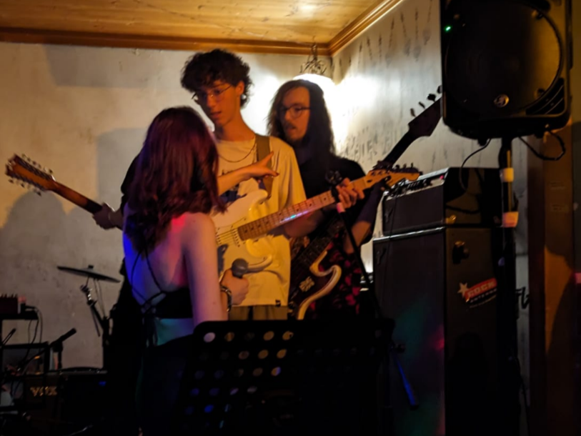

Die Entstehungsgeschichte der Ersatzbank (2/4)

Teil 2: Die Fusion der Bands
In ihrer Verzweiflung suchten die Bandmitglieder nach einer Lösung. Lorenz, der auch in der Band „Upstream Station“ spielte,
schlug vor, diese Gruppe zur Unterstützung zu holen. Die Idee war, beide Bands zu kombinieren, um einen Auftritt auf die Beine zu stellen.
So traten Zoe (Gesang) und Jonas (Gitarre, Keyboard) von „Upstream Station“ der neu geschaffenen Ersatz-Band bei,
während Lorenz, Raphael, Joshua und Simon aus „Missing Max“ weiterhin mitwirkten. Nach einigen Diskussionen einigten sie sich humorvoll auf den Namen „Ersatzbank“.